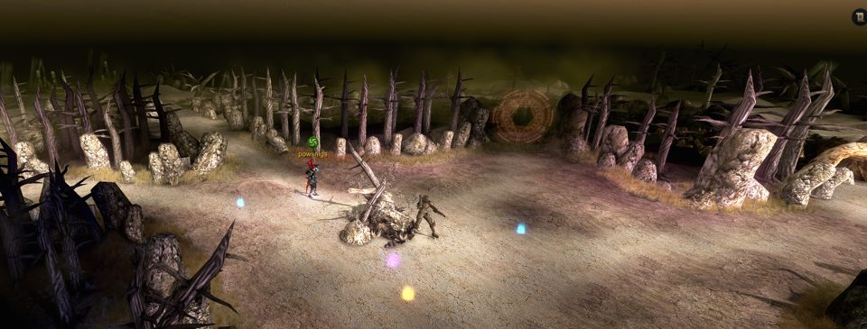
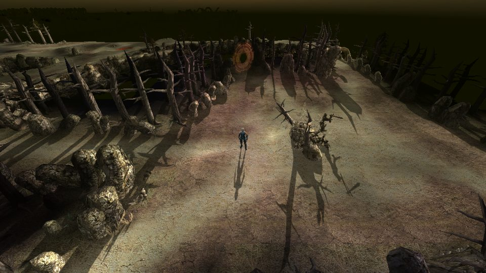
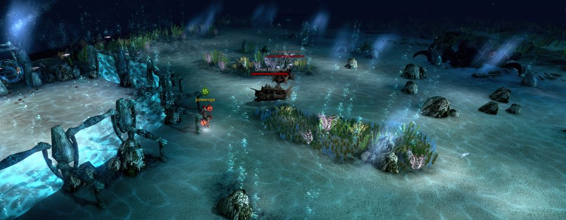
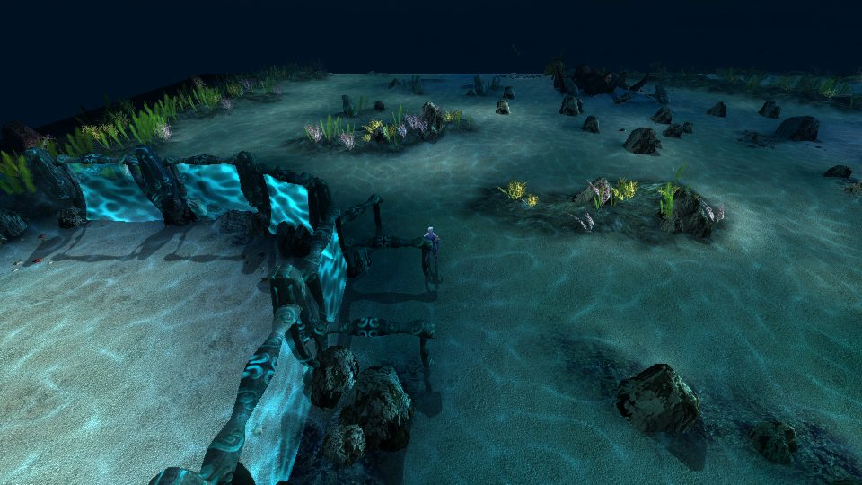
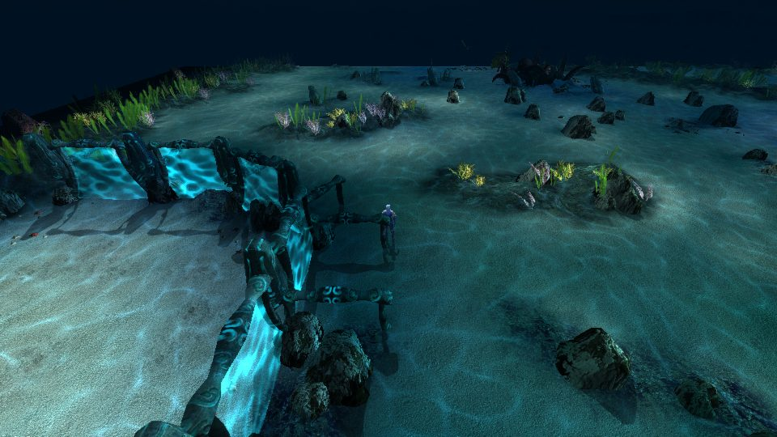
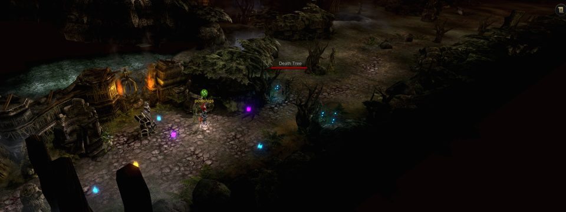
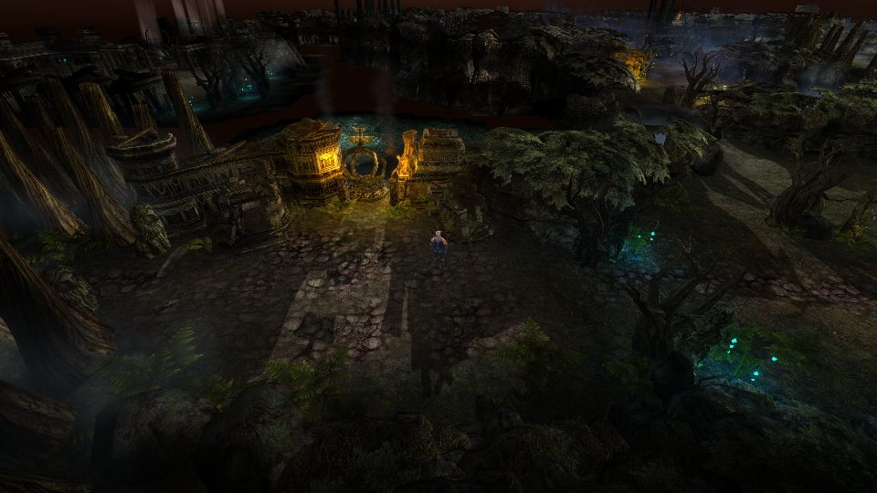
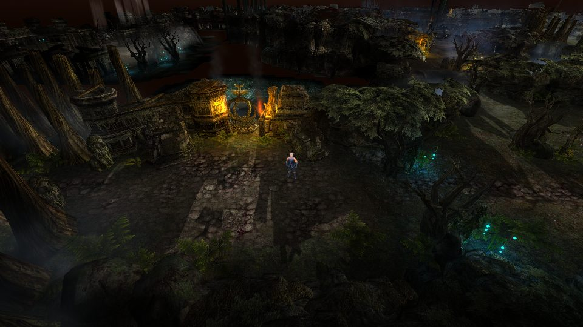
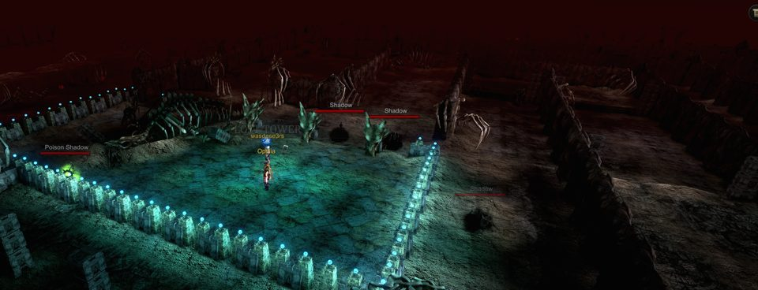
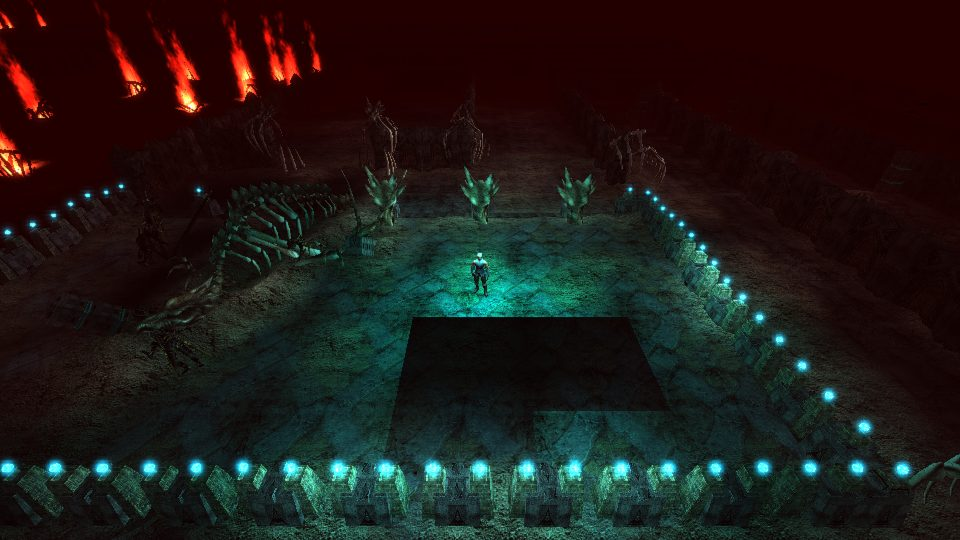

Atmosfera: Mega x nosso (r1132)
Build r1132, 25/11 às 18h55. As imagens do porte são capturas do Editor; o ângulo da câmera é aproximado.
O que mudou (R2216 + R2218): em Atlans, Tarkan e Lost a neblina do Mega é o controle de exposição (começa colada no herói). Ela tinha sido afastada e trocada, e um passe dobrava a neblina. Agora segue a receita do Mega e nada estoura.
Ainda falta, comparando: em Atlans, os raios de luz descendo e os peixes; em Tarkan, a neblina um pouco mais densa ao longe.
Ainda falta, comparando: em Atlans, os raios de luz descendo e os peixes; em Tarkan, a neblina um pouco mais densa ao longe.
Tarkan


Atlans



Aida



Lost Tower

